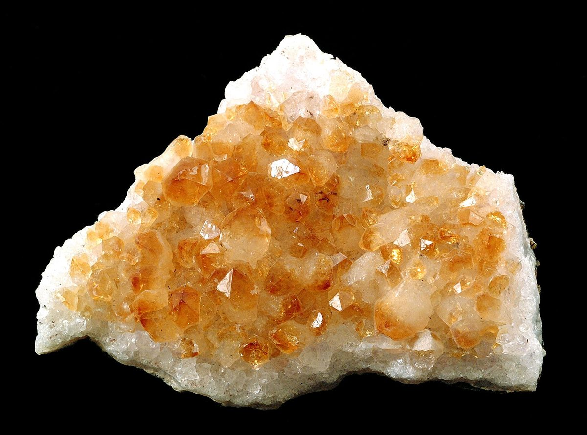

口コミ
こんなお店かもしれない
カフェという業種から自然に想像できる声を、制作側が創作したものです。
以下は制作側が考えた創作のイメージ例で、実在のお客様の投稿ではありません。実際の口コミ・評価とは関係ありません。
窓際の席で、ゆっくり飲み物を味わえそうなお店です。気分に合わせて過ごし方を変えられそうで、また来たくなります。
色とりどりの時間をまとめて楽しめそうな、わくわくする雰囲気を想像します。何度か通ううちに、お気に入りが見つかりそうです。
友人と近況を話しながら、のんびり過ごせそうな場所です。店名のとおり、いろいろな気分をまとめて受け止めてくれそうです。
